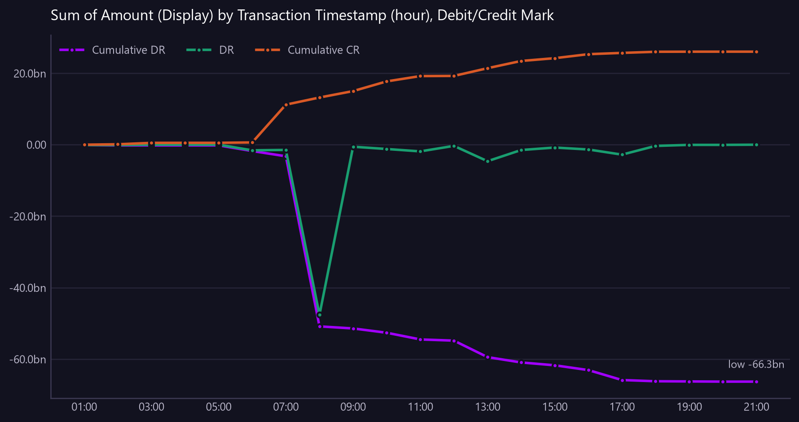

Sum of Amount (Display) by Transaction Timestamp (hour), Debit/Credit Mark
Credits against debits by hour for the most recent day, with a running total, showing whether inflows arrived before outflows.
Asked as For the most recent day, show credits and debits by hour with the running net position, so I can see whether inflows arrived before outflows.

vs average % is a percentage and cannot share an axis with the amounts, so it is in the table only. Only the 3 largest measures are charted; plotting more would need colours that cannot be told apart reliably. The table shows all of them.
Commentary
The report provides a detailed hourly breakdown of credits and debits for the most recent day, along with the cumulative net position. The most notable pattern is the significant credit inflow at 07:00, totaling 10,570,319,665.49, which stands out as an unusual spike compared to other hours. This large inflow at 07:00 temporarily improved the net position, but was followed by a substantial debit of -47,617,516,429.05 at 08:00, which significantly impacted the cumulative debit total. Operations should closely examine the transactions at 07:00 and 08:00 to understand the cause of these large movements and their impact on liquidity management.
| Transaction Timestamp (hour) | CR | DR | Cumulative CR | Cumulative DR | vs average % | Unusual |
|---|---|---|---|---|---|---|
| 2026-08-18 01:00 | 0.00 | -102,690,662.51 | 0.00 | -102,690,662.51 | -100.00 | |
| 2026-08-18 02:00 | 119,452,086.85 | -97,509,558.16 | 119,452,086.85 | -200,200,220.67 | -90.40 | |
| 2026-08-18 03:00 | 393,276,712.85 | 0.00 | 512,728,799.70 | -200,200,220.67 | -68.30 | |
| 2026-08-18 04:00 | 10,861,398.58 | 0.00 | 523,590,198.29 | -200,200,220.67 | -99.10 | |
| 2026-08-18 05:00 | 508,068.20 | -3,361,638.06 | 524,098,266.49 | -203,561,858.73 | -100.00 | |
| 2026-08-18 06:00 | 111,107,226.50 | -1,570,526,672.26 | 635,205,492.98 | -1,774,088,530.99 | -91.00 | |
| 2026-08-18 07:00 | 10,570,319,665.49 | -1,466,296,259.02 | 11,205,525,158.47 | -3,240,384,790.02 | 752.50 | yes |
| 2026-08-18 08:00 | 1,997,041,763.76 | -47,617,516,429.05 | 13,202,566,922.23 | -50,857,901,219.07 | 61.10 | |
| 2026-08-18 09:00 | 1,799,679,116.80 | -569,785,082.66 | 15,002,246,039.03 | -51,427,686,301.73 | 45.20 | |
| 2026-08-18 10:00 | 2,717,233,523.42 | -1,206,548,196.41 | 17,719,479,562.45 | -52,634,234,498.14 | 119.20 | |
| 2026-08-18 11:00 | 1,485,146,750.64 | -1,871,763,472.12 | 19,204,626,313.09 | -54,505,997,970.26 | 19.80 | |
| 2026-08-18 12:00 | 42,124,105.48 | -332,962,369.25 | 19,246,750,418.57 | -54,838,960,339.51 | -96.60 | |
| 2026-08-18 13:00 | 2,162,085,104.36 | -4,620,001,824.21 | 21,408,835,522.93 | -59,458,962,163.72 | 74.40 | |
| 2026-08-18 14:00 | 2,023,916,548.24 | -1,490,175,877.08 | 23,432,752,071.17 | -60,949,138,040.79 | 63.20 | |
| 2026-08-18 15:00 | 783,619,335.39 | -795,312,765.11 | 24,216,371,406.55 | -61,744,450,805.90 | -36.80 | |
| 2026-08-18 16:00 | 1,117,785,153.90 | -1,341,060,157.55 | 25,334,156,560.45 | -63,085,510,963.45 | -9.80 | |
| 2026-08-18 17:00 | 355,654,945.07 | -2,783,445,747.00 | 25,689,811,505.52 | -65,868,956,710.45 | -71.30 | |
| 2026-08-18 18:00 | 319,009,628.14 | -340,373,202.52 | 26,008,821,133.66 | -66,209,329,912.97 | -74.30 | |
| 2026-08-18 19:00 | 23,225,512.91 | -53,119,529.36 | 26,032,046,646.57 | -66,262,449,442.33 | -98.10 | |
| 2026-08-18 20:00 | 4,871,226.60 | -51,380,566.13 | 26,036,917,873.18 | -66,313,830,008.45 | -99.60 | |
| 2026-08-18 21:00 | 0.00 | -2,002,547.99 | 26,036,917,873.18 | -66,315,832,556.44 | -100.00 |
Limitations of this view
- An hourly profile spanning 22 days is not an intraday view, so this covers the most recent day in the data (18 Aug 2026). Ask for a specific date, or for a daily breakdown, to see the whole period.
- 1 of 21 periods sit more than two standard deviations from the period average of 1,239,853,232 and are marked as unusual.
- The view is scoped to the most recent day in the data, which is 2026-08-18.
- The running net position is calculated using display currency (GBP).
- Data completeness depends on whether all transactions for the day have been received.
Dependencies
- The calculation of the running net position depends on the derived column formula.
Downloads
{kind=link}
The Markdown documents everything considered, so a reader can hand it to an AI and ask follow-up questions about this view.
How this was produced
{
"view": "business_ledger",
"sheet": "Business Ledger Txn View",
"source_file": "synthetic_liquidity_month.xlsx",
"mode": "aggregate",
"filters": [],
"group_by": [
"Transaction Timestamp (hour)"
],
"time_bucket": {
"column": "Transaction Timestamp",
"granularity": "hour"
},
"measures": [
"sum of Amount (Display)",
"split by Debit/Credit Mark"
],
"columns": [],
"sort_by": "Transaction Timestamp (hour)",
"limit": null,
"join": null,
"derived": [],
"currency_corrections": [
"1 of 21 periods sit more than two standard deviations from the period average of 1,239,853,232 and are marked as unusual.",
"An hourly profile spanning 22 days is not an intraday view, so this covers the most recent day in the data (18 Aug 2026). Ask for a specific date, or for a daily breakdown, to see the whole period."
],
"data_as_of": "2026-08-18T21:35:41",
"measure": "Amount (Display)",
"aggregation": "sum",
"rows_in_view": 9780,
"rows_after_filters": 402,
"rows_returned": 21,
"executed_at": "2026-08-20T11:29:45"
}